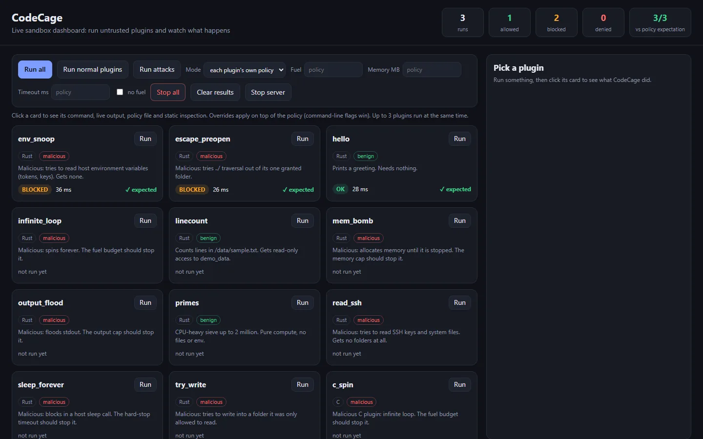
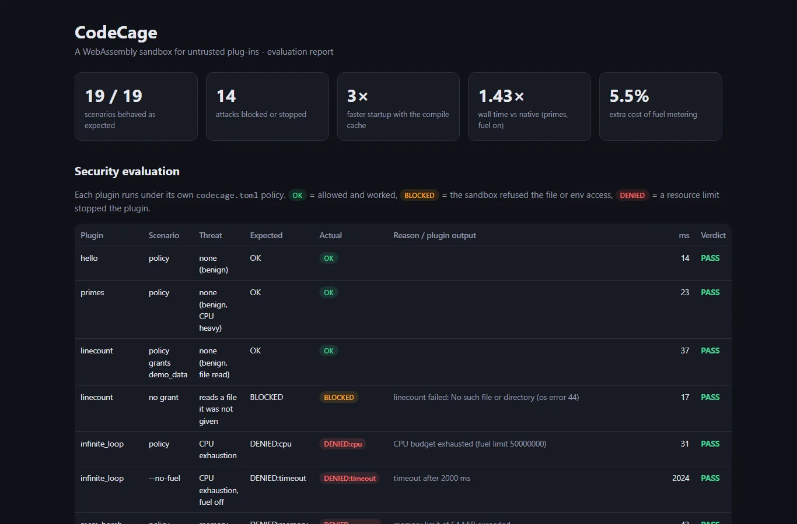

Tech project · Final-year project
CodeCage
A Rust sandbox that runs untrusted WebAssembly plugins under strict, deny-by-default limits.





- Deny-by-default: plugins get no file, environment or network access.
- Fuel, memory, timeout and output limits, with per-plugin TOML policies, SHA-256 hash pinning and an audit log.
- Live HTML/JS dashboard for running plugins and reading results.
- 14 plugins in Rust and C (10 attacks, all contained); 26 tests, 19/19 scenarios, CI on Windows and Linux; v1.0.
- 1.43× native speed, ~5.5% fuel cost, and a compile cache that makes start-up 3× faster (28.5 → 9.4 ms).